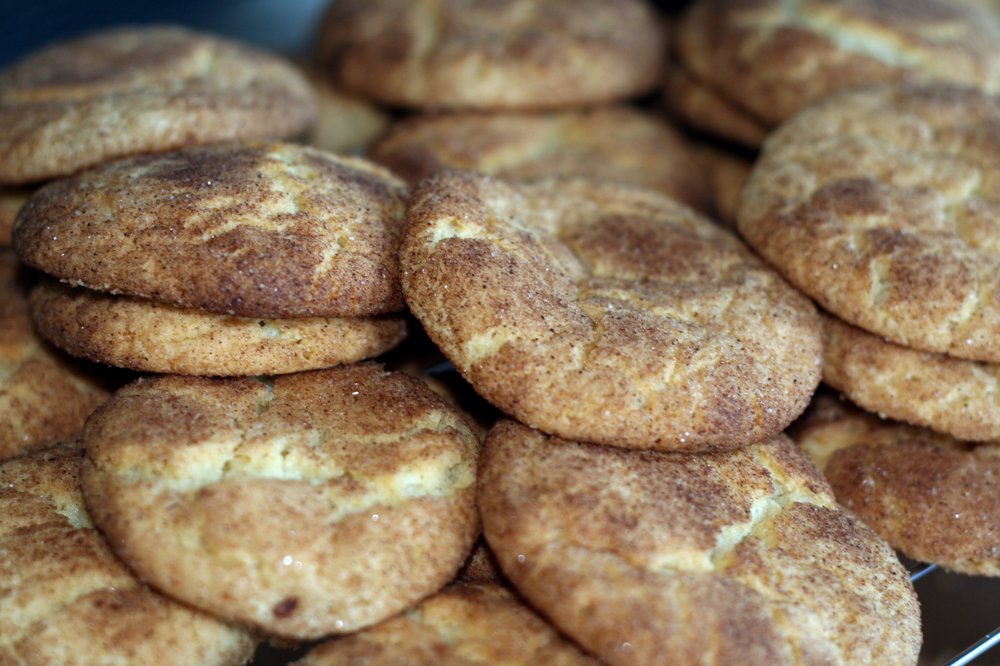

Home
Snickerdoodles

About this recipe
Snickerdoodles are soft, slightly tangy cookies coated in cinnamon-sugar. Because they're rolled and covered in cinnamon-sugar, snickerdoodles tend to have a cracked appearance when they're fully baked.
Nobody quite knows where the cookie got its name, but some speculate it comes from "schneckennudel" (a cinnamon-spiked German dessert).
Ingredients
- Sugar: This snickerdoodle cookie recipe starts with 1 ½ cups of white sugar.
- Butter and shortening: A blend of butter and shortening creates the ideal rich, fluffy, and soft texture.
- Eggs: Two large eggs add moisture and richness. Plus, they help bind the dough together.
- Vanilla: Vanilla extract lends complexity and enhances the overall flavor.
- Flour: All-purpose flour has gluten, which gives the dough structure.
- Cream of tartar: Most snickerdoodle recipes call for cream of tartar, an ingredient that gives the cookies their signature tangy flavor and pillowy texture.
- Baking soda: Baking soda acts as a leavener, which means it helps the cookies rise.
- Salt: A pinch of salt enhances the flavors of the other ingredients.
- Cinnamon-sugar: The snickerdoodles are rolled in a sweet, cozy mixture of cinnamon and sugar before they're baked.
Steps
- Make the dough: Beat the sugar, butter, shortening, eggs, and vanilla together. Mix the flour, cream of tartar, baking soda, and salt in a separate bowl. Add the dry ingredients to the wet ingredients, then stir until well-combined.
- Roll the dough: Shape the dough into walnut-sized balls. Roll each ball in cinnamon-sugar until they're all evenly coated.
- Bake the cookies: Bake the cookies in a preheated oven until they're set, but not too hard. Cool on a wire rack.